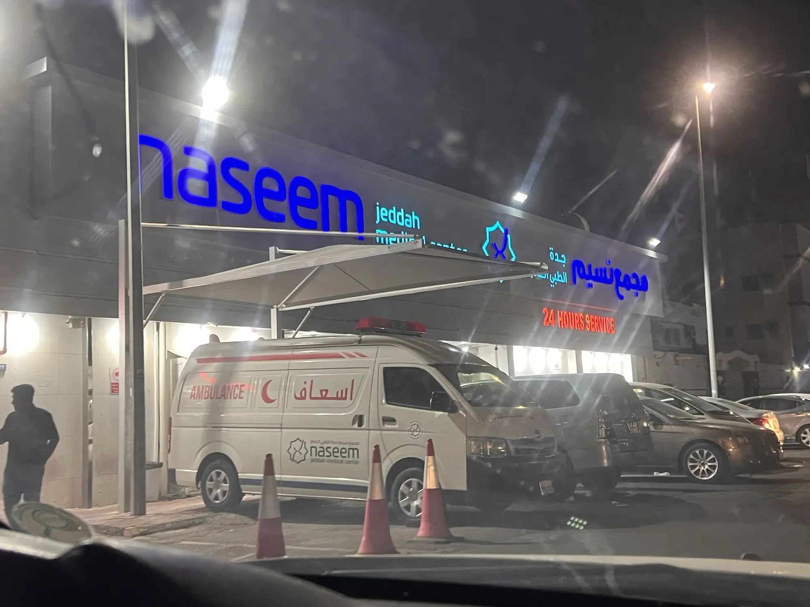
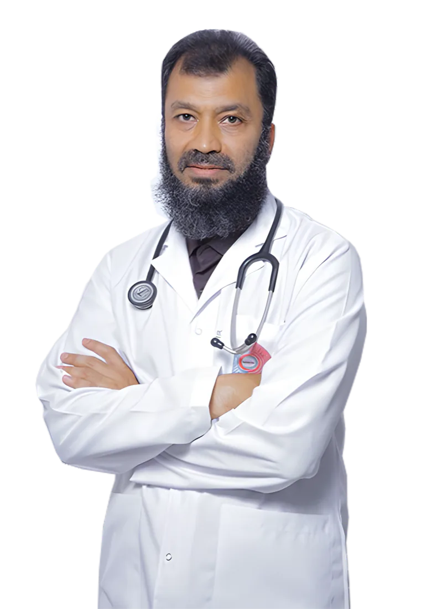
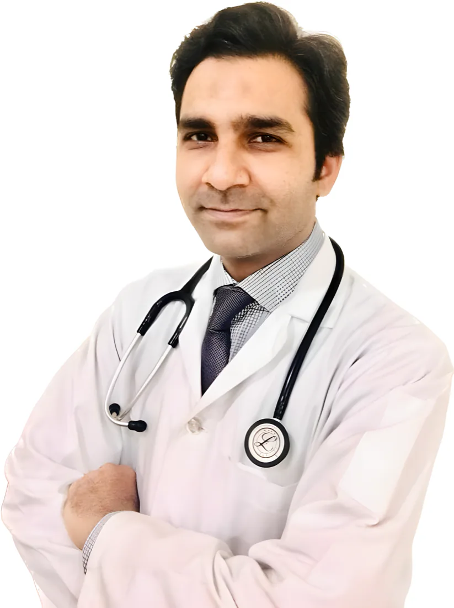
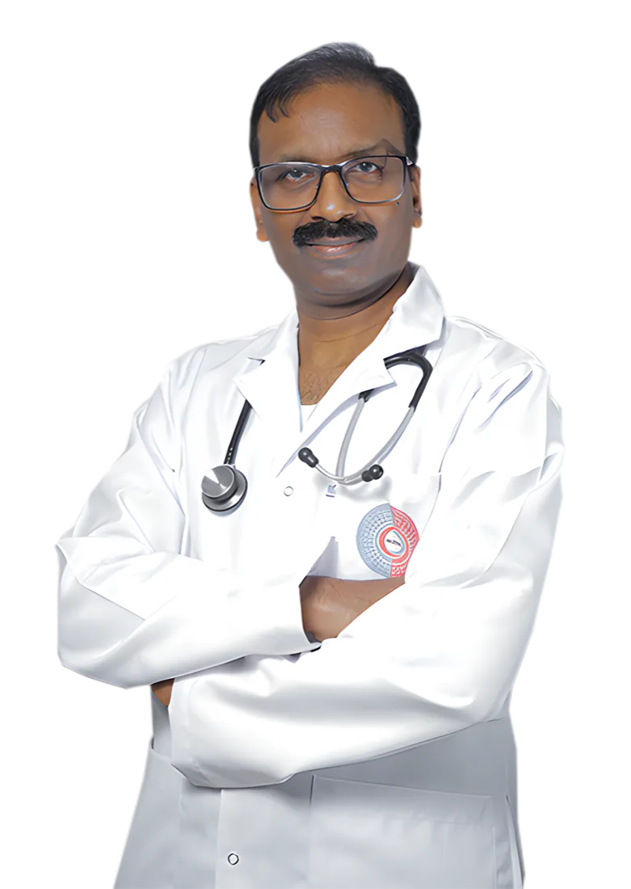
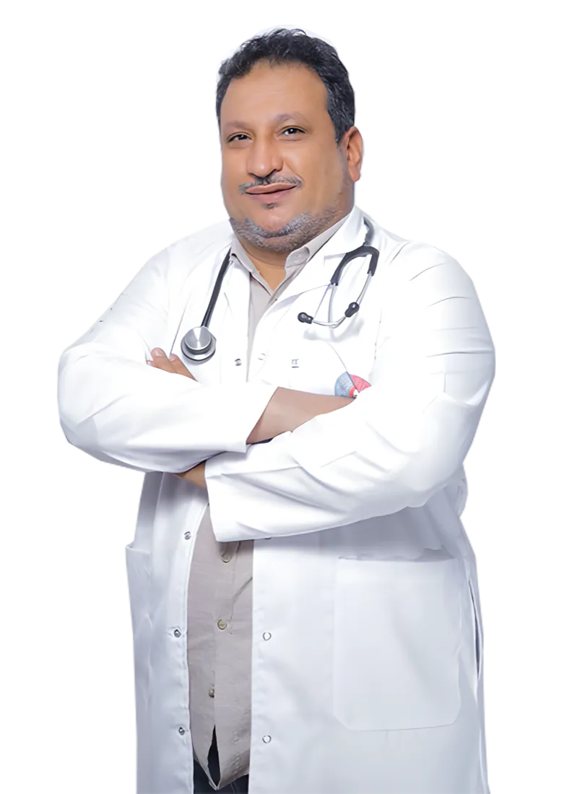

الاستقبال والجهاز الذاتي
سجّل عند الاستقبال. وفي زيارة المتابعة خذ رقمك من الجهاز الذاتي، ومنه تطبع تقرير المختبر أيضاً، فلا تنتظر في الطابور.
Naseem Jeddah Medical Center
مجمع طبي عام في حي العزيزية منذ 2003. قرب سوق المنار، مفتوح ليلاً ونهاراً.
تعال بدون موعد في أي ساعة. أكثر من 25 طبيباً في عشرة تخصصات، والمختبر والأشعة والسونار في نفس المبنى.

صحار الوردي، العزيزية

نفس الباب، في الليلمفتوح 24 ساعة، والطوارئ على 012 287 5570
نحن مجمع للعيادات الخارجية أسسه د. عدنان محمد يوسف سلامة عام 2003. يعمل الأطباء العامون على ثلاث فترات، فتجد طبيباً من الثامنة صباحاً حتى منتصف الليل، وأطباء الاختصاص صباحاً ومساءً. تحاليلك وأشعتك تصل إلى نظام المجمع مباشرة، فلا تحتاج أن تحمل التقارير إلى الطبيب.
مرتّبين حسب الدوام الآن بتوقيت جدة. اسأل عن أي طبيب بالاسم عند الحجز.

طب عام
9 ص – 1 م و 5 م – 9 م

الباطنة
9 ص – 1 م و 5 م – 9 م
استشارية أطفال
الاثنين والخميس 10 ص – 1 م

الأمراض الصدرية
8 ص – 4 م

طب الأسنان العام
8 ص – 4 م

طب الأسنان العام
4 م – 11 م

طب العيون
10 ص – 2 م و 5 م – 11 م

جراحة العظام
2 م – 10 م

جراحة العظام
9 ص – 1 م و 5 م – 9 م

الجراحة العامة
9:30 ص – 1 م و 5 م – 9:30 م

أنف وأذن وحنجرة
10 ص – 1 م و 5 م – 10 م

طب الأطفال
10 ص – 1 م و 5 م – 10 م

النساء والولادة
10 ص – 1 م و 5 م – 10 م

النساء والولادة
الأحد–الخميس 1 – 5 م · السبت 10 ص – 1 م و5 – 10 م

الأشعة
10 ص – 1 م و 5 م – 10 م

المختبر وعلم الأمراض
9 ص – 1 م و 5 م – 9 م

طب عام
10 ص – 1 م و 5 م – 10 م

جراحة الفم والوجه والفكين
8 ص – 4 م

تقويم الأسنان
4 م – 12 منتصف الليل

طب الأسنان العام
8 ص – 4 م

طب الأسنان العام
4 م – 12 منتصف الليل

طب الأسنان العام
8 ص – 4 م
طب الأسنان العام
4 م – 12 منتصف الليل

طب عام
2 م – 10 م

طب عام
8 ص – 4 م

طب عام
8 ص – 4 م

طب عام
4 م – 12 منتصف الليل

طب عام
8 ص – 4 م

طب عام
4 م – 12 منتصف الليل
طب عام
8 ص – 4 م
عشر عيادات، إضافة إلى المختبر والأشعة. افتح أي قسم لترى ما نعالجه فيه.
سجّل عند الاستقبال. وفي زيارة المتابعة خذ رقمك من الجهاز الذاتي، ومنه تطبع تقرير المختبر أيضاً، فلا تنتظر في الطابور.

قبل الطبيب، تقيس الممرضة الضغط والحرارة والنبض ونسبة الأكسجين والوزن. تصل القراءات إلى الطبيب قبل أن تدخل.
تحاليل، أشعة سينية، بانوراما للأسنان وسونار، يديرها أخصائي أشعة وأخصائي علم أمراض. النتائج على نظام المجمع.

صرف الوصفة من صيدلية منصور أو صيدلية نسيم القريبتين، والنظارات من Eye Point. لا داعي للبحث في الحي.
بطاقة امتياز سنوية لك ولعائلتك: استشارات مجانية وخصم على التحاليل والأشعة والأسنان والصيدلية.
| الميزة | الفضية125ريالفرد | الذهبية250ريال3 أفراد | الماسية500ريال5 أفراد |
|---|---|---|---|
| الاستشارات المجانية | 4 | 8 | 12 |
| الأشعة | 35% | 35% | 40% |
| المختبر | 35% | 35% | 40% |
| العيون | 35% | 35% | 40% |
| الأسنان | 10% | 15% | 20% |
| الإجراءات الصغرى | 10% | 15% | 20% |
| الصيدلية | 5% | 7% | 7% |
الأسعار لا تشمل ضريبة القيمة المضافة. البطاقة صالحة سنة من تاريخ التسجيل. بعد انتهاء الاستشارات المجانية تُطبق الرسوم المعتادة. التحاليل والأشعة المحوّلة لجهات خارجية غير مشمولة.
تعال بدون موعد، وتصلك النتيجة بسرعة.
Bupa Arabia Tawuniya MedGulf Malath SAICO Al Rajhi Takaful AXA Cooperative Gulf Union Cooperative TCS Mednet
نتعامل مع شركات التأمين هذه ومع الدفع النقدي. اتصل بنا قبل الزيارة لنتأكد من تغطيتك.
صحار الوردي، حي العزيزية، جدة 23342
قرب سوق المنار. المواقف أمام المبنى مباشرة.
24 ساعةكل يوم من أيام الأسبوع، ومنها الجمعة.